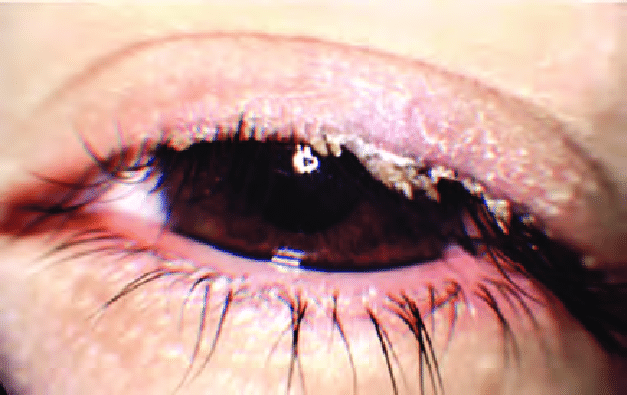

Blepharitis
Blepharitis is a subacute or chronic inflammation of the lid margin. It is an extremely common disease.
Types
✦Bacterial blepharitis
✦Seborrhoeic or squamous blepharitis
✦Mixed staphylococcal with seborrhoeic blepharitis
Bacterial Blepharitis
Also known as chronic anterior blepharitis,or staphylococcal blepharitis or ulcerative blepharitis.
It is a chronic infection of the anterior part of the lid margin.
Etiology
-
Causative organisms- positive staphylococci,Streptococci,Moraxella
-
Predisposing factors
Clinical Features

|
Treatment
|
Method
|
|
Lid hygiene
|
At least twice daily and should include:
-
Warm compresses for 5-10 minutes to soften the crusts
-
Crust removal and lid margin cleaning with the help of cotton buds dipped in the dilute baby shampoo
-
Avoid rubbing of the eyes or fingering of the lids.
|
|
Antibiotics
|
should be used as below:
-
Eye ointment should be applied at the lid margin, immediately after removal of the crusts.
-
Antibiotic eye drops
-
Oral antibiotics
|
My Assignment
Skills
| ios development |
+++ |
| web development |
+++ |
| photography |
++++ |
| painting |
+++++ |
| web development |
+++ |
| painting |
+++++ |
|
| ios development |
+++ |
| photography |
++++ |
|